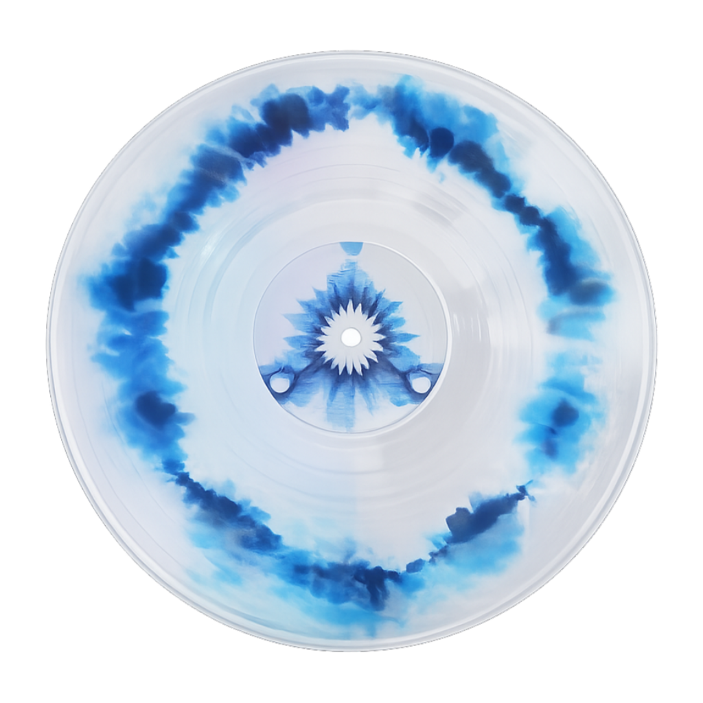

Matheus Brasileiro Aguiar
"Matuê"
Nascido dia 11 de outubro de 1993, Matheus Brasileiro Aguiar aparece pela primeira
vez em Fortaleza no Ceará.
Matheus começou sua carreira no reggae, mas teve seu
primeiro hit com o single "Anos Luz" lançado em 2017. Sua próxima grande aparição
foi com "Máquina do Tempo", seu primeiro album de trap publicado em 2020, que é
considerado um grande marco para o trap brasileiro.
Após o album Máquina do Tempo, Matuê lançou mais alguns singles e mais dois
albuns "333" e "Xtranho", respectivamente, além de um EP entre os discos Maquina do Tempo
e 333 - Salve Todos, sendo "Sabor Overdose no Yakisoba".

